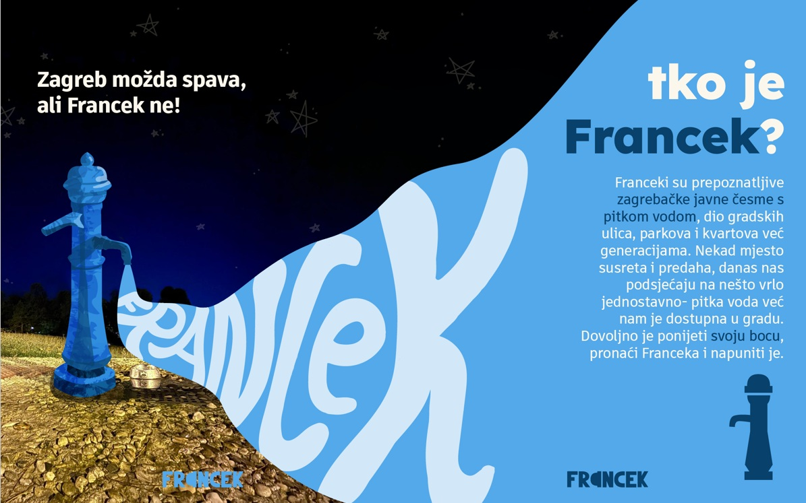
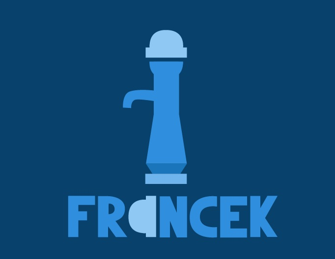
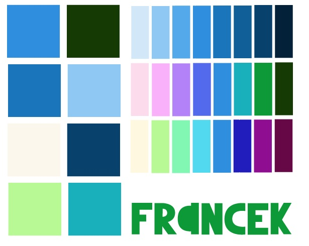
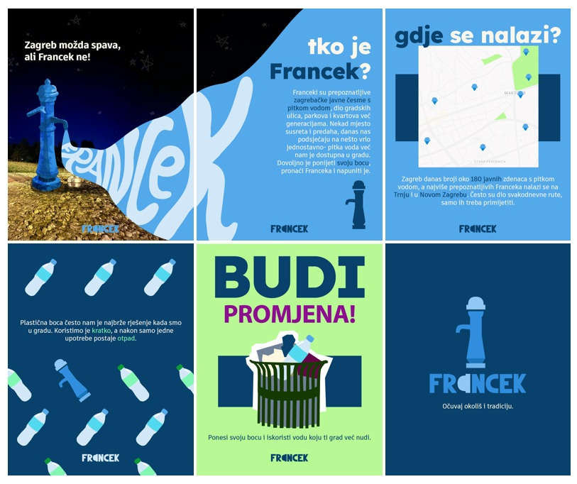
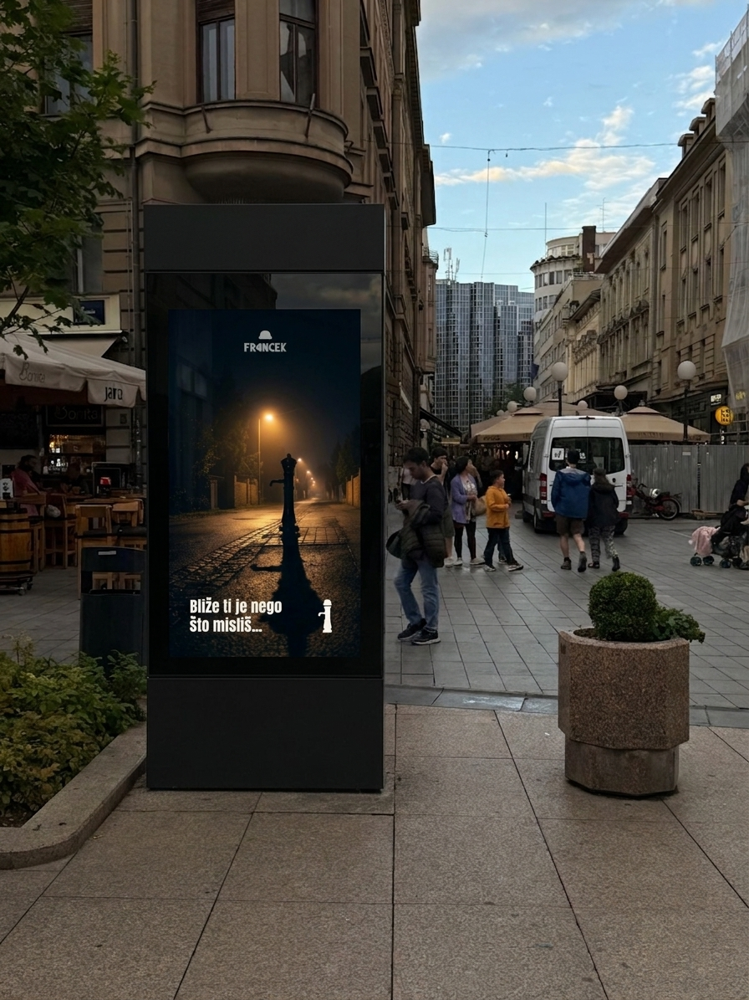
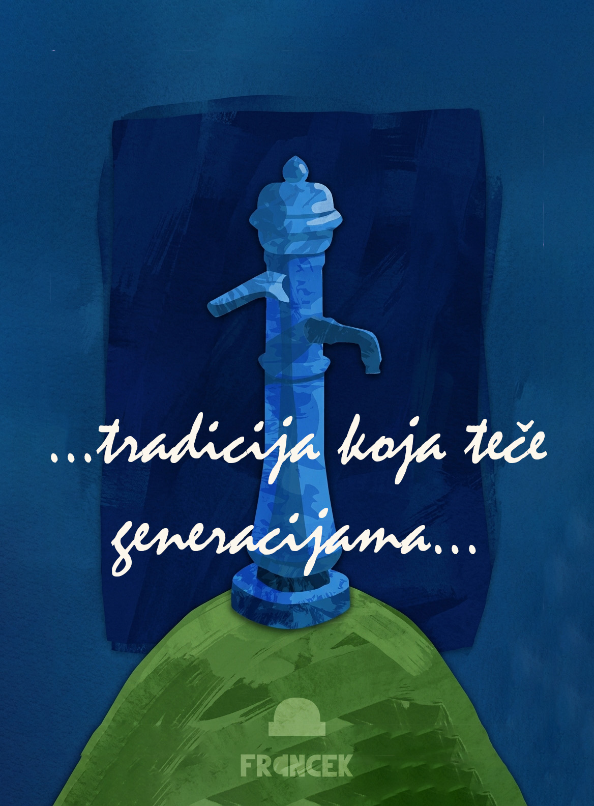
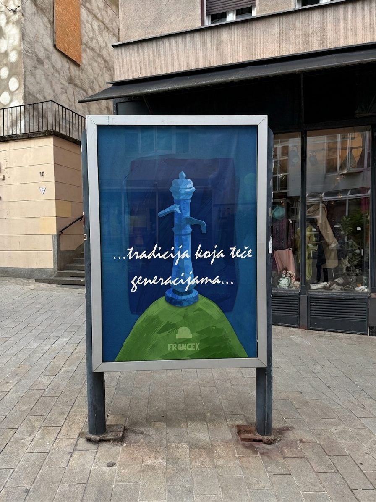

Zašto Franceki?
Projekt Francek osmišljen je kao vizualni identitet i promotivna kampanja koja potiče korištenje zagrebačkih javnih česmi s pitkom vodom. Temu sam odabrala zbog raširenosti svakodnevne navike kupovanja vode u jednokratnoj plastičnoj ambalaži, iako je voda dostupna na javnim česmama diljem grada. Uz to, smatram kako je dio tradicije koji bi se trebao održavati.
Kampanja Franceke predstavlja kao prepoznatljiv, dostupan i praktičan dio kretanja gradom. Glavna poruka, „Očuvaj okoliš i tradiciju”, poziva korisnika da ponese višekratnu bocu i vodu potraži ondje gdje je već dostupna.
Znak i identitet
Vizualni identitet temelji se na pojednostavljenom obliku gornjeg dijela Francek pumpe. Taj je element izdvojen kao znak jer je prepoznatljiv, zaobljen i podsjeća na kapu. Njegova jednostavna forma omogućuje uporabu u različitim veličinama i formatima, od oznake na plakatu do digitalnih objava.

Tipografski znak povezuje naziv Francek s ilustriranim simbolom. Slovo „a” oblikovano je rotiranjem znaka kapice za devedeset stupnjeva, čime se simbol integrira u samu riječ. Na taj se način ostvaruje povezanost između naziva kampanje i oblika javne česme, bez potrebe za dodatnim objašnjenjem.
Vizualni jezik
Odabrana je glavna svjetlo plava nijansa, prema kojoj je izvedena paleta skladnih boja. Kombinacijom ilustracije, rukopisne tipografije i jednostavnih poruka Francek dobiva pristupačan i pomalo nostalgičan karakter. Takav pristup povezuje tradiciju zagrebačkih javnih česmi sa suvremenim načinima komunikacije.

Instagram carousel
Za komunikaciju na društvenim mrežama izrađena je carousel objava od šest slajdova.
Sadržaj postupno uvodi korisnika u temu: od prepoznatljivog vizuala Franceka, preko kratkog objašnjenja njegove funkcije i prikaza lokacija, do problema jednokratne plastike i poziva na promjenu navike. Format carousela omogućuje da se informativni sadržaj ne prikaže odjednom, nego kroz slijed vizuala koji korisnik samostalno pregledava. Završni slajd ponovno ističe glavnu poruku kampanje i povezuje sve dijelove objave.

Digitalni video
Kampanja je proširena i na kratki vertikalni video. Takav se može iskoristiti kao sadržaj za Instagram priču, digitalno oglašavanje ili kao prikaz na digitalnom plakatu. Jednostavna animacija napravljena izmjenom kadrova, privlači pažnju. Mogućnost njenog ponavljanja u petlji, omogućuje kvalitetan materijal za digitalni plakat, a uz popratni zvuk, može se iskoristiti kao kratki oglas na društvenim mrežama.

Tradicija koja teče kroz generacije
Plakat povezuje povijesni karakter Franceka sa suvremenom potrebom za smanjenjem jednokratne plastike. Ilustrirani Francek postavljen je kao središnji motiv, dok poruka sugerira da korištenje javne vode nije nova ideja, nego navika koju je moguće ponovno uključiti u svakodnevni život grada. Vizualno oblikovanje plakata uzelo je inspiraciju iz grba grada Zagreba čime se dublje ojačava povezanost sa tradicijom.

